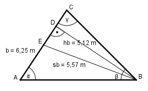

Aufgabe 146 Wie lang ist die kleinere der fehlenden Dreieck- seiten, wenn b = 6,25 m, hb = 5,12 m und sb = 5,57 m.

Im Dreieck EBD: hb 5,12 m cos φ = ---- = -------- = 0,9192 --> φ = 23,2° sb 5,57 m δ = 90° - φ = 90° - 23,2° = 66,8° Im Dreieck ABE: Winkel bei E = 180° - δ = 180° - 66,8° = 113,2° AE = b/2 = 6,25/2 m = 3,125 m Fall SWS: c2 = AE2 + sb2 - 2 * AE * sb * cos 113,2° c2 = 3,1252 m2 + 5,572 m2 - - 2*3,125 m * 5,57 m*(-0,3939) c2 = 54,5 m2 |√ c = 7,4 cm Fall SSW: Sinussatz: sb c ------- = ------------| *sin 113,2° sin α sin 113,2° sb * sin 113,2° ----------------- = c | *sin α sin α sb * sin 113,2° = c * sin α |:c sb * sin 113,2° 5,57 m * 0,9191 sin α = ----------------- = ----------------- = c 7,4 m 0,6918 --> α = 43,8° Fall SWS: Cosinussatz: a2 = b2 + c2 - 2 * b * c * cos α a2 = 6,252m2 + 7,42m2 - 2 * 6,25 m*7,4 m*cos 43,8° a2 = 6,252 m2 + 7,42 m2 - 2*6,25 m + 7,4 m*0,7218 a2 = 27,1 m2 |√ a = 5,2 m Dies ist die kleinere Seite.